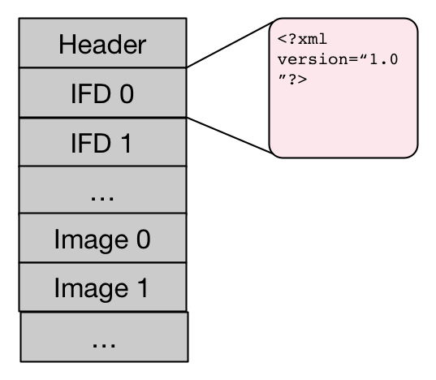
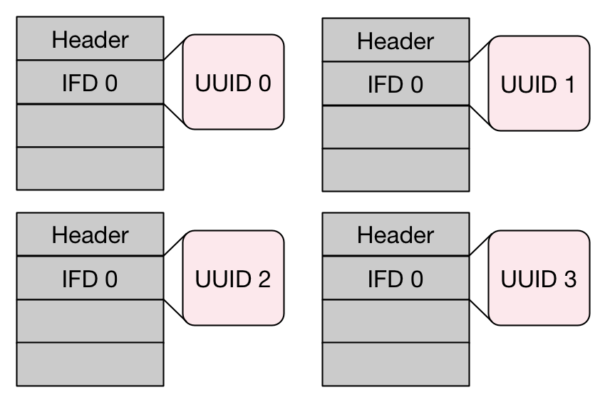

OME Model and Formats
OME Data Model

OME-TIFF specification
- Based on the TIFF specification
- OME Metadata stored as OME-XML used the ImageDescription tag of the first IFD

OME-TIFF specification
Large datasets
- Large volumes of data
- Multi-dimensional, HCS structures
- TIFF specification limited to 4GB (32-bit pointers)
Solution 1: BigTiff
- 64-bit based offsets
- Specific extensions
Solution 2: distribution across files
Extended metadata
- Add metadata not defined in the OME Data Model
- Use structured annotations
...
This is the description of the sample map A
SampleValueA
This is the description of the sample map B
SampleValueB-1
SampleValueB-2
Tools and software
- Validation (xmlvalid...)
- Reading
- Writing: C++ reference implementation
What's next
OME Data Model
- Breaking changes